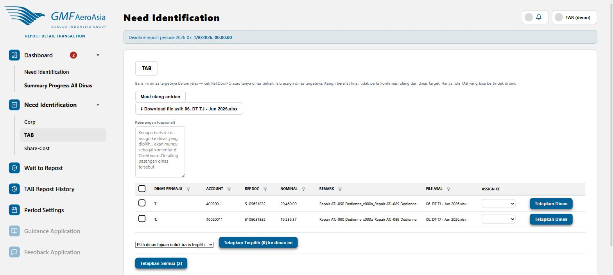

Assign transaksi "Ask TA" (dinas target belum jelas)
rdt/confirm?target=INVESTIGATION

- Baris di sini adalah transaksi yang kolom Recipient di Excel-nya tidak bisa dikenali sistem sebagai kode dinas manapun (misal tertulis "Ask TA").
- Cek Ref.Doc/Remark pada tiap baris, atau tanyakan ke dinas pengaju bila perlu, untuk menentukan dinas target yang benar.
- Pilih dinas tujuan di dropdown Assign Ke, lalu klik Tetapkan Dinas per baris — atau centang beberapa baris dan gunakan Tetapkan Terpilih / Tetapkan Semua untuk assign massal.
Keputusan ini final. Begitu di-assign, transaksi langsung berstatus Confirmed ke dinas tujuan (tidak perlu dikonfirmasi ulang oleh dinas target) — beda dengan alur normal yang masih menunggu persetujuan dinas target.